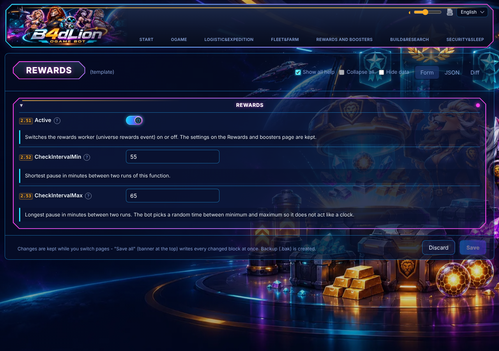

2.051 Active Rewards.Active
Switches the rewards worker (universe rewards event) on or off. The settings on the Rewards and boosters page are kept.
Rewards.

Rewards.ActiveSwitches the rewards worker (universe rewards event) on or off. The settings on the Rewards and boosters page are kept.
Rewards.CheckIntervalMinShortest pause in minutes between two runs of this function.
Rewards.CheckIntervalMaxLongest pause in minutes between two runs. The bot picks a random time between minimum and maximum so it does not act like a clock.